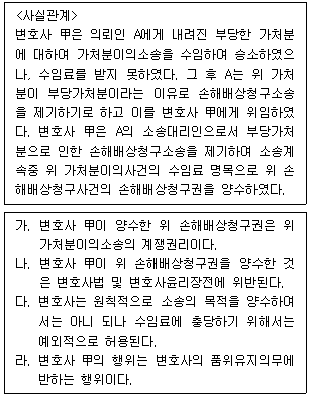
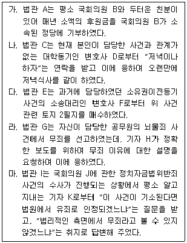
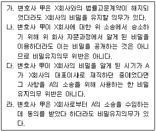
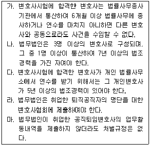

법조윤리 (2011-08-20 기출문제)
1과목: 임의 구분
1. 변호사법상 변호사에 대한 징계와 관련된 다음 설명 중 옳은 것은?
- 대한변호사협회 변호사징계위원회의 결정에 따라 대한변호사협회의 장은 해당 변호사에 대하여 업무정지를 명할 수 있다.
- 수임변호사나 법무법인의 담당변호사에 대한 징계개시의 신청을 청원할 수 있는 자는 의뢰인이나 의뢰인의 법정대리인, 배우자, 직계친족 또는 동거인이다.
- 대한변호사협회 변호사징계위원회의 결정에 불복하는 징계혐의자 및 징계개시 신청인이 그 통지를 받은 날부터 30일 이내에 법무부 변호사징계위원회에 이의신청을 하지 아니하면 위 통지를 받은 날부터 대한변호사협회 변호사징계위원회의 징계의 효력이 발생한 것으로 본다.
- 대한변호사협회의 장, 검찰총장 또는 업무정지명령을 받은 변호사는 법무부장관에게 업무정지명령의 해제를 신청할 수 있고, 법무부장관은 위 신청을 받으면 직권으로 업무정지명령을 해제하거나 법무부 변호사징계위원회에 이를 심의하도록 요청하여야 하며, 법무부 변호사징계위원회에서 해제를 결정하면 지체 없이 해제하여야 한다.
(정답률: 알수없음)

2. 변호사 甲이 A를 대리한 민사소송에서 패소하자, A는 변호사 甲에게 수임료 및 소송경비의 잔액 지급을 거절한다. 이에 변호사 甲은 A를 상대로 수임료 등의 지급청구소송을 제기하려고 한다. 한편, 변호사 甲의 지급요구에 대해 A는 자신의 주장을 충실히 반영하지 않은 변호사 甲의 변론 때문에 패소했다고 주장하며 변호사 甲을 상대로 법무과오소송을 제기하려고 한다. 반면 변호사 甲은 패소의 원인이 A의 사실 은폐와 일관성 없는 진술 때문이라고 주장한다. 이러한 상황에서 다음 기술 중 옳은 것은?
- 변호사 甲은 자신이 제기하는 수임료 등의 청구소송에서는 A에 관한 비밀을 공개할 수 있지만 A가 제기하는 법무과오소송에서는 A에 관한 비밀을 공개할 수 없다.
- 변호사 甲은 자신이 제기하는 수임료 등의 청구소송에서는 A에 관한 비밀을 공개할 수 없지만 A가 제기하는 법무과오소송에서는 A에 관한 비밀을 공개할 수 있다.
- 변호사 甲은 두 소송 모두에서 필요한 최소한의 범위에서 A에 관한 비밀을 공개할 수 있다.
- 변호사가 업무상 알게 된 비밀을 공개할 수 있는 경우는 법률에 특별한 규정이 있거나 공익상의 이유가 있는 경우에 한정되기 때문에, 변호사 甲이 미지급 보수를 받기 위해 A에 관한 비밀을 누설하는 것은 허용되지 않는다.
(정답률: 알수없음)
3. 변호사 甲은 사기죄로 구속된 피의자 A로부터 형사사건을 수임하면서 착수금으로 500만원을 지급받았다. 이와 함께 변호사 甲은 A가 구속적부심 석방 또는 보석허가 시 300만원을, 집행유예 선고 시 200만원을 성공보수금으로 지급받기로 약정하였다. 형사사건 변호사 보수에 관한 설명 중 옳지 않은 것은?
- 변호사 甲이 변호인 선임계 접수 등 변론 활동에 착수하기 전에 담당 검사가 A에 대해 기소유예 처분을 하고 A를 석방하였다면 착수금의 전부 또는 일부를 반환하여야 한다.
- 변호인 선임계를 접수한 후 변호사 甲이 구속적부심 또는 보석허가 신청을 하여 A가 석방되거나 재판결과 집행유예 선고를 받았더라도, 형사사건에서 성공보수금 약정은 사법상 효력이 없으므로 약정한 성공보수금을 청구할 수 없다.
- 변호사 甲이 성공보수금을 미리 받아 두었다면 변호사윤리장전에 위배되어 징계사유가 된다.
- 변호사 甲이 변론을 하였으나 판결 선고결과 A에게 실형이 선고된 경우 착수금 반환에 관한 특약을 아니 한 이상 착수금 500만원은 반환할 필요가 없다.
(정답률: 알수없음)
4. 다음 사실관계에 대한 설명 중 옳은 것을 모두 고른 것은?

- 가, 나
- 나, 다
- 가, 라
- 나, 라
(정답률: 알수없음)
5. 변호사와 의뢰인의 관계에 대한 설명으로 옳지 않은 것은?
- 변호인이 신체구속을 당한 사람에게 법률적 조언을 하는 것은 그 권리이자 의무이므로, 변호인이 적극적으로 피고인 또는 피의자로 하여금 허위진술을 하도록 하는 것이 아니라 단순히 헌법상 권리인 진술거부권이 있음을 알려 주고 그 행사를 권고하는 것을 가리켜 변호사로서의 진실의무에 위배되는 것이라고는 할 수 없다.
- 민사사건을 위임받은 변호사로서는 수임사건의 판결이 송달된 이후에 즉시 이를 의뢰인에게 통지함과 동시에 판결이유를 검토하여 의뢰인으로 하여금 권리옹호에 필요한 조치를 취할 기회를 잃지 않도록 하여야 한다.
- 고소·고발사건의 대리업무를 수임한 경우 착수금과 성공보수 방식으로 보수를 약정하더라도 그것이 변호사법이나 변호사윤리장전에 위반되는 것은 아니지만, 피고소인이 기소 또는 구속된 경우를 성공보수의 지급조건으로 약정하는 것은 선량한 풍속에 위반한 사항을 내용으로 하는 것이므로 무효이다.
- 변호사는 서면에 의한 명백한 약정이 있는 경우가 아니면 보석보증금을 성공보수로 전환할 수 없다.
(정답률: 알수없음)
6. 변호사 甲은 의뢰인으로부터 이혼 및 재산분할을 청구해 달라는 의뢰를 받고 소송을 제기하였으나 1, 2심 모두 패소하였다. 이에 의뢰인은 변호사 甲을 상고심의 소송대리인으로 선임하지는 않았으나 변호사 甲에게 상고장을 제출하여 줄 것을 부탁하였고 변호사 甲은 이를 승낙하였다. 변호사 甲은 자신의 사무실 사무장에게 상고장 제출을 지시하였으나, 사무장이 상고장을 제출하지 않은 채 퇴사하는 바람에 상고기간이 도과되었다. 이에 의뢰인이 찾아와 폭언을 하면서 돈을 돌려달라고 요구하였고, 변호사 甲은 그동안 지급받은 변호사 보수 1,000만원을 합의금으로 지급하기로 하였다. 그러나 변호사 甲은 그 중 400만원만 지급하고 나머지 600만원을 지급하지 않았다. 의뢰인이 위 변호사를 징계해 줄 것을 진정하였는데, 다음 중 징계가능 여부에 대한 설명으로 옳은 것은?
- 의뢰인과의 사이에 상고장을 제출하기로 약속하였음에도 이를 위반하였기 때문에 변호사의 성실의무나 품위유지의무 위반으로 징계할 수 있다.
- 1, 2심의 소송대리를 위임받았을 뿐 상고심의 소송대리를 위임받지 않았으므로 징계대상이 아니다.
- 의뢰인과의 사이에 이미 이 사건 상고장 제출의무를 이행하지 않은 데에 따른 손해배상금을 지급하기로 약정하여 일부 이행하였고, 나머지 합의금은 민사소송을 제기하여 집행할 수 있으므로 징계대상이 아니다.
- 변호사 자신의 직무수행상의 잘못이 아닌 직원의 잘못으로 인하여 상고장을 제출하지 않았기 때문에 징계할 수 없다.
(정답률: 알수없음)
7. 변호사의 업무광고 방법 중 허용되는 것은?
- 변호사 甲은 대한변호사협회의 '변호사 전문분야 등록에 관한 규정'에 따라 형사법, 건설법을 전문분야로 등록한 내용에 대하여 '형사법 및 건설법 분야의 국내 최고 전변호사'라고 무료 배포되는 지역 신문에 광고하였다.
- 변호사 乙은 법무법인의 대표로서 일간신발행인과의 사이에 분야별로 뛰어난 법무법인을 소개하는 기획 기사의 외양을 갖추어 해당 법무법인을 홍보하는 유료광고계약을 체결하여 해당 내용을 게재하게 하였다.
- 변호사 丙은 대한변호사협회의 '변호사 전문분야 등록에 관한 규정'에 따라 민사법, 형사법을 전문분야로 등록한 후 지하철역 구내에 민사법 및 형사법의 주요 취급업무 내용을 액자 모양의 광고판 2개에 기재하여 광고하였다.
- 변호사 丁은 관할구청의 허가를 받아 도로 현수막 게시대에 주요 취급업무의 내용, 사무실의 위치 및 전화번호 등의 내용이 적힌 현수막을 게시하였다.
(정답률: 알수없음)
8. 형사사건에서 피고인 A의 변호인으로 선임된 법무법인의 담당 변호사 甲이 그 법무법인이 해산된 후 변호사 개인의 지위에서 위 형사사건의 피해자에 해당하는 B를 위하여 실질적으로 동일한 쟁점을 포함하고 있는 민사소송을 대리하여 항소심에서 소송을 수행하고 있다. 변호사 甲이 B의 대리인으로서 한 소송행위의 효력에 관한 설명 중 옳은 것은? (다툼이 있는 경우에는 판례에 의함)
- 미리 A의 동의를 얻지 아니하였더라도 수임제한 규정을 위반한 경우에 해당하지 아니하므로 완전한 효력이 있다.
- 미리 A의 동의를 얻은 경우에는 수임제한 규정을 위반한 경우에 해당하지 아니하므로 완전한 효력이 있다.
- 미리 A의 동의를 얻은 경우에도 수임제한 규정을 위반한 경우에 해당하므로 B는 항소심 법원에 이의를 제기하여 위 소송행위를 무효로 할 수 있다.
- 미리 A의 동의를 얻은 경우에도 수임제한 규정을 위반한 경우에 해당하므로 B의 이의제기 여부와 관계없이 언제나 효력이 발생하지 않는다.
(정답률: 알수없음)
9. 변호사의 비밀유지의무에 대한 다음 설명 중 옳지 않은 것은?
- 변호사는 원칙적으로 의뢰인의 비밀을 유지해야 할 의무가 있으나, 수임관계에서 발생한 변호사의 청구권을 확보하거나 의뢰인의 청구에 대하여 방어하기 위하여 의뢰인의 비밀을 공개할 수 있다.
- 변호사윤리장전상 의뢰인의 과거의 범죄행위, 비윤리적 행위 등은 공익상의 필요가 있는 경우에도 공개할 수 없다.
- 의뢰인이 아닌 제3자로부터 알게 된 정보도 비밀에 포함된다.
- 사건의 수임 여부를 결정하기 위하여 상담하는 과정에서 알게 된 정보는 추후 사건을 수임하지 않았더라도 공개하여서는 아니 된다.
(정답률: 알수없음)
10. 증권회사인 주식회사 X가 고객과 포괄적 일임매매 약정을 하였음을 기화로, 주식회사 X의 ○○지점 직원 A가 충실의무를 위반하여 고객의 이익을 무시하고 주식회사 X의 영업 실적만을 증대시키기 위하여 무리하게 빈번한 회전매매를 함으로써 고객에게 손해를 입혔고, 주식회사 X의 ○○지점 지점장과 본사 임직원들은 직원 A의 회전매매 사실을 몰랐다. 손해를 입은 고객은 주식회사 X 및 그 직원 A를 공동피고로 하여 불법행위로 인한 손해배상청구소송을 제기하였다. 한편, 주식회사 X는 위 소송에서 손해배상책임이 인정되어 고객에게 배상을 하게 될 경우에는 직원 A에 대하여 구상권을 행사할 계획을 갖고, 개업신고를 한 사내변호사 甲에게 직원 A에 대한 구상권 행사 여부의 검토를 지시하였다. 주식회사 X의 사내변호사 甲이 취할 수 있는 행동에 관한 설명 중 옳은 것은?
- 변호사 甲은 주식회사 X의 사내변호사에 불과하므로, 주식회사 X와 직원 A 어느 누구로부터도 위 손해배상청구소송 사건을 수임하여 소송대리 업무를 수행할 수 없다.
- 변호사 甲은 주식회사 X의 사내변호사이므로, 주식회사 X 및 직원 A로부터 사건을 수임하여 소송대리 업무를 수행하려고 하는 경우 소속 지방변호사회에 위임장을 경유하지 않아도 된다.
- 주식회사 X와 직원 A 사이에서 이해관계의 충돌이 발생될 우려가 농후하므로 변호사 甲이 주식회사 X와 직원 A를 동시에 대리하는 것은 수임제한 규정에 위배된다.
- 변호사 甲이 직원 A에 대한 구상권 행사 여부에 대해 검토한 후 위 손해배상소송에서 직원 A보다 주식회사 X의 책임이 더 크다고 판단하여 직원 A에 대해서만 소송대리를 하더라도 주식회사 X의 사내변호사로서 이익충돌회피의무 또는 비밀유지의무에 위반되지 아니한다.
(정답률: 알수없음)
11. 변호사 甲은 의뢰인 A로부터 곧 수임료를 지급하겠다는 약속을 받고 A의 형사사건의 변론을 맡아 기록을 등사하고 피고인 신문사항과 변론요지서를 미리 준비하였다. 그럼에도 불구하고 의뢰인 A가 수임료를 지급하지 아니하여 여러 차례 그 지급을 요청하였으나 의뢰인 A는 수임료 지급을 미루면서 오히려 변호사가 작성한 변론요지서 등이 부실하다고 비난하고 있다. 변호사 甲과 의뢰인 A의 관계에 대한 설명으로 옳지 않은 것은?
- 의뢰인 A는 변호사 甲에게 해임의 사유를 설명함이 없이 언제든지 변호사를 해임할 수 있다.
- 의뢰인 A가 변호사 甲을 해임한 경우에 변호사 甲은 이미 처리한 수임사무의 비율에 따른 보수의 지급을 청구할 수 있다.
- 변호사 甲은 의뢰인 A의 보수 미지급을 이유로 위임계약을 해지하고 사임할 수 없다.
- 변호사 甲이 사임을 하기 위해서 의뢰인 A의 동의를 얻을 필요는 없다.
(정답률: 알수없음)
12. 변호사 甲은 토지매매에 관하여 A로부터 사기피해를 입었다고 주장하는 B를 대리하여 A를 상대로 하는 손해배상청구소송을 수행하고 있다. 그러던 중 A가 변호사 甲을 찾아와 위 사기 관련 형사사건 및 위 사기와는 전혀 관련이 없는 C에 대한 대여금청구소송을 의뢰하고자 한다. 변호사 甲은 A가 자신에게 의뢰하고자 한 사건들을 수임할 수 있는가?
- A가 변호사 甲에게 의뢰하고자 한 사건은 모두 수임하고 있는 사건의 상대방이 위임하는 다른 사건이므로 변호사 甲은 B의 동의가 있으면 두 사건 모두 수임할 수 있다.
- 변호사 甲은 B의 동의가 있더라도 A의 위 형사사건을 수임할 수 없다.
- 변호사 甲은 A의 위 형사사건에 관하여는 B의 동의가 있어야 수임할 수 있으나 A의 C에 대한 대여금청구소송은 B와 무관하여 B의 동의가 없어도 사건을 수임할 수 있다.
- 변호사 甲은 B의 동의가 있더라도 A의 위 대여금청구소송을 수임할 수 없다.
(정답률: 알수없음)
13. 의뢰인 A는 변호사 甲에게 민사소송을 위임하면서 위임계약서를 작성하였는데, 그 위임계약서에는 의뢰인이 임의로 화해하거나 소를 취하하는 경우 전부 승소한 것으로 보고 성공보수금을 지급하기로 하는 승소간주조항이 부동문자로 인쇄되어 있었다. 또한 변호사 甲과 의뢰인 A는 위 위임계약서의 특약조항란에 의뢰인이 위임계약을 위반하거나 중도 해지, 해제 등을 한 경우 전체에 대하여 승소한 것으로 간주하고 소송비용, 성공보수금을 지급하기로 하는 내용을 추가로 기재하였다. 그 후 의뢰인 A는 변호사 甲과 상의 없이 상대방과 소송 외에서 화해하고 소를 임의로 취하하였고, 변호사 甲과의 위임계약을 임의로 해지하였다. 이에 변호사 甲은 위 위임계약서에 근거하여 의뢰인 A에게 소송비용 및 성공보수금의 지급을 청구하였다. 위 사안에 관한 설명 중 옳지 않은 것은? (다툼이 있는 경우에는 판례에 의함)
- 이 사건 승소간주조항은 위임계약의 일방당사자인 변호사가 다수의 상대방과 계약을 체결하기 위하여 일정한 형식에 의하여 미리 마련한 계약의 내용으로서 약관의 규제에 관한 법률 소정의 약관에 해당한다.
- 이 사건 특약조항은 의뢰인에게 부당하게 과중한 손해배상액의 예정으로서 약관의 규제에 관한 법률 소정의 약관에 해당한다.
- 이 사건 승소간주조항은 의뢰인에게 부당하게 불리한 조항으로서 신의성실의 원칙에 반하여 공정을 잃은 것이어서 무효이다.
- 의뢰인은 위 특약조항에 따라 소송비용, 성공보수금을 지급할 책임이 있다.
(정답률: 알수없음)
14. 다음 중 법관윤리강령에 위배되는 행위를 모두 고른 것은?

- 가, 마
- 나, 다, 라
- 가, 다, 마
- 나, 라, 마
(정답률: 알수없음)
15. 다음 설명 중 옳지 않은 것은? (다툼이 있는 경우에는 판례에 의함)
- 변호사가 소개료를 지급하고 자신의 법률사무소 사무직원으로부터 법률사건의 알선을 받은 행위는 변호사법위반에 해당한다.
- 변호사가 변호사법에 위반하여 법률사건의 알선을 받을 수 없는 자로부터 알선을 받아 법률사건을 수임하고 받은 수임료는 추징의 대상이 아니다.
- 노무사가 어느 기업과 자문계약을 체결하고 노무 관련 업무 외 다른 법률업무에 대해서는 변호사가 상담·지원해주면서 노무사가 그 수입 중 일부를 변호사에게 지급할 경우 변호사법위반이 된다.
- 변호사 아닌 자에게 고용되어 법률사무소의 개설·운영에 관여한 변호사의 행위는 일반적인 형법 총칙상의 공모, 교사 또는 방조에 해당되고, 변호사를 고용한 변호사 아닌 자는 처벌하면서 고용된 변호사는 처벌할 수 없다면 형평에도 맞지 않으므로 고용된 변호사는 변호사 아닌 자의 공범으로 처벌할 수 있다.
(정답률: 알수없음)
16. 다음 중 변호사의 법률사무소 사무직원으로 채용될 자격이 있는 사람은?
- 형법상 사문서위조죄로 징역 1년에 집행유예 3년을 선고받고 집행유예 기간 중에 있는 사람
- 형법상 뇌물수수죄로 징역 2년을 선고받고 그 형의 집행을 종료한 후 2년이 지난 사람
- 형법상 공갈죄로 징역 1년에 집행유예 2년을 선고받고 집행유예기간이 지난 후 다시 1년이 지난 사람
- 공무원으로서 징계 해임된 후 2년이 지난 사람
(정답률: 알수없음)
17. 변호사 甲은 L법률사무소에서 변호사업무를 3년 정도 수행하다가 공정거래위원회 사무관으로 공채되어 2008. 6. 20.부터 2010. 6. 19.까지 약관심사과에서 근무하였다. 그 후 2010. 7. 1. 다시 예금보험공사에 경력직으로 입사하여 감사실에서 일하다가 2011. 6. 25. 퇴직하였다. 그 후 변호사 甲은 L법률사무소의 변호사로 복귀하여 일하고 있다. L법률사무소는 변호사 甲 외에도 乙 등 20여명의 변호사들의 각자 계산으로 운영되고 있으나, 변호사 업무 수행시 통일된 형태를 갖추고 비용을 분담하여 직원과 사무공간을 공유하고 있다. 한편 X전자회사는 2010. 12.말경 Y납품업체와의 2010. 10. 25.자 납품계약 관련 불공정거래행위 여부가 문제되어 최근까지 공정거래위원회 하도급심사과로부터 심사를 받고 있는데, 이 건과 관련하여 법적인 대응방안에 대한 법률검토 의견서를 받고자 공정거래법 분야에 전문성이 있는 변호사를 찾던 중, 변호사 甲을 소개받았다. 2011. 8. 20. 현재 변호사 甲 또는 乙이 X전자회사로부터 위 사건을 수임하여 처리할 수 있는지에 대한 설명 중 옳은 것은?
- 변호사 甲은 예금보험공사에서 일하다 퇴직하였으므로 이 사건을 수임할 수 없다.
- 변호사 甲은 이 사건을 수임하여 처리할 수 있다.
- 변호사 甲이 평소 친분이 있는 다른 법무법인 소속의 변호사 丙에게 사건을 수임하게 한 후 실질적으로 업무처리에 도움을 주는 것은 위법이다.
- 변호사 甲이 L법률사무소의 다른 변호사 乙로 하여금 사건을 수임하게 한 후 실질적으로 업무처리에 도움을 주는 것은 위법이다.
(정답률: 알수없음)
18. 변호사 甲은 A와 B 사이의 교통사고로 인한 손해배상소송에서 A의 대리를 맡고 있다. B는 변호사 甲이 성실하고 전문성이 있다고 판단하여 자신이 피고인으로 되어 있는 횡령죄의 형사사건에서 甲을 자신의 변호인으로 선임하고자 한다. 변호사 甲의 수임이 허용되는가?
- 허용된다. 손해배상소송과 형사사건은 별개의 사건이기 때문이다.
- 허용되지 않는다. 현재 수임하고 있는 사건의 상대방 B가 위임하는 사건이기 때문이다.
- 원칙적으로 허용되지만, A가 반대할 경우에는 허용되지 않는다.
- 원칙적으로 허용되지 않지만, A가 동의한 경우에는 허용된다.
(정답률: 알수없음)
19. 다음 중 변호사법상 형사처벌의 대상이 되지 않는 것은? (다툼이 있는 경우에는 판례에 의함)
- 변호사가 아닌 사람이 수사담당 공무원들에게 청탁한다는 명목으로 금원을 교부받았으나 그 금원의 일부를 변호사 선임비용 또는 채무변제금으로 사용한 경우
- 경찰관이 변호사에게 소송사건의 대리를 알선하고 그 대가로 금품을 받기로 하는 약속이 명시적이지 아니하고 묵시적인 데에 그친 경우
- 변호사가 아닌 사람이 변호사로부터 대가를 받기로 하고 제3자의 법률사건의 대리를 변호사에게 알선하였으나 제3자와 변호사 간에 위임계약이 성립하지 않은 경우
- 변호사가 법률사건을 유상으로 유치할 목적으로 사무직원을 수사기관에 출입 또는 주재하게 하는 경우
(정답률: 알수없음)
20. 변호사 甲은 X회사와 1년간 법률고문계약을 체결한 후 회사의 지배구조 및 기밀에 대하여 자주 접할 기회가 있었다. 전임 대표이사 A와 X회사 사이에 경영권 분쟁이 발생하자 변호사 甲은 X회사와의 고문계약 해지를 통보하고 A로부터 X회사를 상대로 하는 주주총회결의무효확인소송을 수임하여 소송을 제기하려고 한다. 위 사안에 관한 설명 중 옳은 것을 모두 고른 것은?

- 가, 나, 다, 라
- 가, 나, 다
- 가, 나
- 가, 라
(정답률: 알수없음)
2과목: 임의 구분
21. 변호사의 직역과 관련된 다음 설명 중 옳지 않은 것은?
- 개업 변호사 甲은 소속 지방변호사회의 겸직허가 없이도 중앙행정심판위원회의 비상임위원이 될 수 있다.
- 개업 변호사 乙은 소속 지방변호사회의 허가를 받아야만 의류판매업을 경영할 수 있다.
- 개업 변호사 丙은 소속 지방변호사회의 허가 없이는 지방의회 의원으로 활동할 수 없다.
- 개업 변호사 丁은 세무사 등록을 하지 않으면 명함에 세무사 명칭을 사용할 수 없다.
(정답률: 알수없음)
22. 다음 중 옳은 것을 모두 고른 것은?

- 가, 라
- 나, 다, 라
- 가, 다, 마
- 가, 나, 라, 마
(정답률: 알수없음)
23. 변호사 甲은 2001. 4. 8. 운전 부주의로 교통사고를 일으켜 A를 사망하게 하여 교통사고처리특례법위반죄로 금고 1년에 집행유예 2년의 형을 선고받고 2002. 3. 6. 그 형이 확정되었다. 그 후 변호사 甲은 적법한 업무수행으로서 2007. 10. 5. 교통사고로 인한 손해배상사건을 수임한 후 의뢰인 B를 대신하여 수령한 합의금을 B에게 지급하지 아니하여 횡령죄로 징역 1년에 집행유예 2년의 형을 선고받고 2008. 10. 20. 그 형이 확정되었다. 변호사 甲에 대한 위 2건의 형사사건과 관련하여 2011. 8. 20. 현재 변호사법상의 징계 또는 등록에 관한 설명으로 옳은 것은?
- 변호사 甲에 대한 징계는 범죄와 관련된 것이므로 지방검찰청 검사장이 징계청구권자가 된다.
- 변호사 甲의 행위는 2회 이상 금고 이상의 형을 선고받고 확정된 경우이므로 영구제명사유에 해당된다.
- 변호사 甲은 위 횡령사건으로 징계처분을 받는 것과 상관없이 변호사등록이 취소된다.
- 변호사 甲이 제명의 징계처분을 받는다면 다시 변호사등록을 하는 것은 불가능하다.
(정답률: 알수없음)
24. 변호사의 수임제한 사유에 대한 설명 중 옳지 않은 것은?
- 법무법인은 공정증서 작성 사무에 관여한 사건은 수임하여 처리할 수 없다.
- 변호사는 단순히 보복이나 상대방을 괴롭히는 방법으로 하는 사건을 수임해서는 안 된다.
- 변호사는 사촌동생이 담당공무원으로서 처리하는 사건을 수임하여 처리할 수 없다.
- 변호사는 쌍방 당사자의 동의를 받으면 과거 중재인으로서 취급하였던 사건을 수임하여 처리할 수 있다.
(정답률: 알수없음)
25. 법무조합 L은 의뢰인 A로부터 손해배상청구 사건을 수임하였다. 위 법무조합의 변호사 甲, 乙이 위 사건의 담당변호사로 지정되었으며, 변호사 丙은 위 사건의 지휘･감독자로 지정되었다. 그런데 담당변호사들이 위 소송수행 과정에서 중요한 증거를 제출하지 않는 등 손해액에 대한 입증을 게을리한 잘못으로 손해배상청구는 기각되었고, 그 결과 의뢰인 A는 큰 손해를 입게 되었다. 다음 설명 중 옳지 않은 것은?
- 의뢰인 A의 손해배상청구 사건에 관여하지 아니한 법무조합 L의 구성원 변호사는 조합재산의 범위 내에서 책임을 진다.
- 담당변호사 甲, 乙은 과실로 인하여 의뢰인 A에게 가한 손해에 대하여 배상할 책임이 있다.
- 담당변호사 甲, 乙이 손해배상책임을 지는 경우 그 담당변호사를 직접 지휘･감독한 변호사 丙은 지휘･감독에 대한 과실이 없었음을 증명한 경우에는 책임이 없다.
- 의뢰인 A의 손해배상청구 사건에 관여한 변호사 甲, 乙, 丙에게 변제자력이 없는 경우에는 다른 구성원 변호사들이 균분하여 변제할 책임이 있다.
(정답률: 알수없음)
26. 다음 설명 중 옳지 않은 것은? (다툼이 있는 경우에는 판례에 의함)
- 소송대리를 위임받은 변호사는 위임사무의 종료단계에서 패소판결이 있었던 경우에는 의뢰인으로부터 상소에 관하여 특별한 수권이 없는 때에도 그 판결을 점검하여 의뢰인에게 불이익한 계산상의 잘못이 있다면 의뢰인에게 그 판결의 내용과 상소하는 때의 승소가능성 등에 대하여 구체적으로 설명하고 조언하여야 할 의무가 있다.
- 변호사는 의뢰인과 체결한 위임계약의 본지에 따라 선량한 관리자의 주의로써 수임사무를 직접 처리해야 하지만, 의뢰인의 승낙이나 부득이한 사유로 인하여 다른 변호사에게 수임사무의 처리를 맡겨 그 다른 변호사가 수임사무를 처리하는 동안에는 그 다른 변호사가 동일한 내용과 정도의 주의의무를 부담하므로 그 기간 동안 원래의 수임인인 변호사는 위 다른 변호사에게 비용지급의무를 부담하는 외에 의뢰인에게는 책임을 부담하지 않는다.
- 민사사건의 소송 대리업무를 위임받은 변호사가 그 소송 제기 전에 상대방에게 채무 이행을 최고하고 형사고소를 제기하는 등의 사무를 처리함으로써 사건 위임인과 상대방 사이에 재판 외 화해가 성립되어 결과적으로 소송제기를 할 필요가 없게 된 경우에, 사건 위임인과 변호사 사이에 소제기에 의하지 아니한 사무처리에 관하여 명시적인 보수의 약정을 한 바 없다고 하여도 특단의 사정이 없는 한 사건 위임인은 변호사에게 위 사무처리에 들인 노력에 상당한 보수를 지급할 의무가 있다.
- 변호사는 소송수행 등 수임사무의 처리로 인하여 받은 금전 기타의 물건 및 그 수취한 과실을 의뢰인에게 인도하여야 하고, 변호사가 의뢰인을 위하여 변호사의 명의로 취득한 권리는 의뢰인에게 이전하여야 한다.
(정답률: 알수없음)
27. 변호사보수에 관한 설명 중 옳지 않은 것은? (다툼이 있는 경우에는 판례에 의함)
- 변호사에게 계쟁사건의 처리를 위임함에 있어서 그 보수지급 및 수액에 관하여 명시적인 약정을 아니하였다 하여도, 무보수로 한다는 등 특별한 사정이 없는 한 응분의 보수를 지급할 묵시의 약정이 있는 것으로 봄이 상당하다.
- 변호사가 소송사건 위임을 받으면서 지급받는 착수금 또는 착수수수료는 일반적으로 위임사무의 처리비용 외에 보수금 일부의 선급금조로 지급받는 성질의 금원이라 볼 것이다.
- 일부 승소시에도 성공보수를 지급하기로 약정한 경우 화해권고결정 확정시에도 성공보수를 지급하여야 한다.
- 피고의 소송 사건을 수임하면서 성공보수를 약정하였고, 그 사건이 쌍방 불출석으로 소 취하 간주된 경우, 이를 피고 소송대리인이 승소한 경우로 볼 수 없다.
(정답률: 알수없음)
28. 변호사 甲은 고등학교 동창생이 대표이사로 있는 X회사의 고문변호사로 활동하기로 하는 계약을 최근에 체결하였다. 변호사 甲은 그 후에 우연한 기회에 X회사의 영업과장 A가 회사 공금을 회사 몰래 주식투자로 사용해 온 사실을 알게 되었다. 변호사 甲은 현재까지는 X회사로부터 아무런 법률자문을 의뢰받은 바가 없다. 이에 관한 다음 설명 중 옳지 않은 것은?
- 변호사 甲은 영업과장 A의 공금횡령 사실을 X회사에 알릴 수 있다.
- 변호사 甲이 X회사의 양해를 얻더라도 영업과장 A의 위 횡령 관련 형사사건을 수임하면 변호사법상 수임제한 규정에 위반된다.
- 변호사 甲이 업무상횡령죄로 재판을 받고 있는 영업과장 A의 변호인이 되었다는 사유로 X회사는 변호사 甲과의 고문계약을 해지할 수 있다.
- 변호사 甲에게 영업과장 A의 위법 사실을 수사기관에 고발할 의무는 없다.
(정답률: 알수없음)
29. 외국법자문사와 외국법자문법률사무소에 관한 설명 중 옳지 않은 것은?
- 외국변호사가 외국법자문사의 자격승인을 받기 위해서는 외국변호사의 자격을 취득한 후 원자격국에서 3년 이상 법률사무를 수행한 경력이 있어야 한다.
- 외국변호사의 자격을 갖춘 변호사가 외국법자문사가 되려면 변호사업을 휴업하거나 폐업하여야 한다.
- 외국변호사가 외국법자문사로서 업무수행을 개시하려면 자격승인을 받은 후 법무부에 외국법자문사 등록신청을 하여야 한다.
- 외국법자문법률사무소는 사전에 공동사건처리 등을 위한 등록을 하지 아니하고는 변호사 등과 동업, 사건의 공동수임 그 밖의 어떠한 방식으로든 사건을 공동으로 처리하고 그로 인한 보수나 수익을 분배할 수 없다.
(정답률: 알수없음)
30. 법무법인 L과 그 구성원 변호사들이 행한 다음 업무 중에서 변호사법상 허용되는 것은?
- 자동차손해보험사의 구상금 소송 사건을 보험사로부터 위임받은 법무법인 L은 그 사무를 처리함에 있어, 소 제기 전후로 구성원 변호사 甲으로 하여금 적극적으로 채무자에게 유선 또는 서면으로 변제의사 유무를 확인하거나 변제를 촉구하는 등의 업무를 행하도록 하였다.
- 변리사로 등록을 한 법무법인 L의 구성원 변호사 乙이 법무법인과는 별도로 변리사 개인 자격으로 변리사 업무를 행하였다.
- 법무법인 L의 구성원 변호사 丙은 소속 지방변호사회의 겸직허가를 받지 않고 X회사의 이사로 취임하였다.
- 법무법인 L은 구성원 변호사 丁을 담당변호사로 지정하여 부동산의 매도인, 매수인 등 당사자 양측의 사이에서 계약을 성사시키기 위한 중개업무를 행하도록 하였다.
(정답률: 알수없음)
31. 변호사의 공익활동과 관련된 설명 중 옳지 않은 것은?
- 공익단체의 상근자로서 현저히 저렴한 실비를 받고 그 단체가 공익목적으로 행하는 사업을 지원하는 활동은 공익활동에 포함될 수 있다.
- 법령의 개정을 위하여 보수를 받지 않고 법률적 봉사를 제공하는 활동은 공익활동에 포함될 수 있다.
- 법무법인이 그 구성원인 개인회원을 대신하여 공익활동을 행할 변호사를 지정할 수 있고, 그 경우 그 지정변호사가 행한 공익활동의 시간은 그 법무법인의 구성원인 개인회원 전원이 공동으로 행한 것으로 보고 그 전원의 수로 균등 배분하여 각 개인회원의 공익활동시간으로 인정할 수 있다.
- 법조경력이 2년 미만인 변호사는 공익활동 의무가 면제되므로 법무법인의 공익활동 수행변호사로 지정될 수 없다.
(정답률: 알수없음)
32. 변호사법상 공직퇴임변호사의 수임제한에 관한 설명으로 옳지 않은 것은?
- 병역의무 이행만을 목적으로 군복무를 한 군법무관은 변호사법상 수임제한을 받는 공직퇴임변호사에 해당하지 않는다.
- 공직퇴임변호사는 퇴직 전 1년부터 퇴직한 때까지 근무한 법원, 검찰청, 군사법원, 금융위원회, 공정거래위원회, 경찰관서 등 국가기관이 처리하는 사건을 퇴직한 날부터 1년 동안 수임할 수 없다.
- 공직퇴임변호사가 변호사법상 수임제한을 받는 사건을 다른 변호사, 법무법인 등의 명의를 빌려 실질적으로 처리하는 등 사실상 수임을 하더라도 변호사법이 이를 명시적으로 금지하고 있지 않으므로 현재로서는 규제할 방법이 없다.
- 공직퇴임변호사의 수임제한은 국선변호 등 공익목적의 수임과 사건당사자가 민법 제767조에 따른 친족인 경우에는 해당되지 않는다.
(정답률: 알수없음)
33. 다음 설명 중 옳지 않은 것은?
- 개업신고를 한 사내변호사는 회사로부터 수임한 소송 사건에 관한 회사의 소송대리인으로서의 지위와 그 회사의 법률 사무에 관한 회사내부 업무처리자로서의 지위를 갖는다.
- 개업 변호사가 휴업한 경우에는 소속 지방변호사회로부터 겸직허가를 받지 아니하고 주식회사의 법무실장이 될 수 있다.
- 법무법인에 소속된 변호사가 1주일에 3일은 법무법인에서 일하고 2일은 주식회사에서 별도의 급여를 받으며 사내변호사로 일할 수 있으려면 소속 지방변호사회로부터 겸직허가를 받아야 한다.
- 개업신고를 한 사내변호사의 경우에도 변호사로서의 독립성이 유지되어야 하고 비밀유지의무도 준수하여야 한다.
(정답률: 알수없음)
34. 변호사의 이익충돌회피의무에 관한 설명 중 옳은 것은?
- 위임사무가 종료된 후에는 종전 사건과 동일하거나 본질적으로 관련된 사건이 아닌 한 대립되는 당사자로부터 사건을 수임할 수 있다.
- 분쟁의 실체가 동일한 경우라도 민사사건과 형사사건과 같이 그 절차를 달리하는 경우에는 의뢰인의 양해없이 대립되는 당사자로부터 사건을 수임할 수 있다.
- 변호사는 배우자인 변호사가 수임하고 있는 사건의 대립되는 당사자로부터는 의뢰인의 양해가 있더라도 사건을 수임할 수 없다.
- 공무원으로서 취급한 사건이라도 의뢰인과 상대방 모두가 양해하면 수임할 수 있다.
(정답률: 알수없음)
35. X건설회사는 외국계 은행 외자유치를 위해서 법률자문을 구하던 중 법무법인 L의 변호사 甲에게 위 프로젝트 관련 문서의 작성을 의뢰하였다. 이에 변호사 甲은 외국계 은행에 제출할 프로젝트와 관련된 설명서, 신청양식, 현금흐름표 등 영업비밀이 포함된 영문서류들을 작성하기로 하였으나 의뢰받은 다른 사건들 때문에 시간에 쫓기게 되었다. 다음 설명 중 옳지 않은 것은?
- 변호사 甲은 위 의뢰를 통해서 알게 된 X건설회사의 정보를 기자에게 공개하여서는 아니 된다.
- 외국계 은행 외자유치에 성공한다면 X건설회사의 주가가 오를 것이라 생각하여 변호사 甲이 자신의 매형에게 X건설회사 주식을 대량 매수하도록 하였다면 이는 비밀유지의무를 위반한 것이다.
- 변호사 甲이 시간에 쫓겨 의뢰인의 동의를 받지 않고 위 프로젝트와 관련된 영문서류 번역을 번역전문업체 B에게 의뢰하더라도 비밀유지의무에 반하지 않는다.
- 변호사 甲이 시간에 쫓겨 같은 법무법인에서 일하는 변호사 乙에게 위 번역을 임의로 맡겼고 변호사 乙이 실질적으로 위 프로젝트의 문서를 모두 작성하였다면 이는 비밀유지의무에 반하지 않는다.
(정답률: 알수없음)
36. 금전적 대가를 받았거나 받기로 약속한 다음 행위 중 변호사법 위반이 아닌 것은? (다툼이 있는 경우에는 판례에 의함)
- 건설업자 A는 상가의 분양 및 임대를 둘러싼 분쟁에 있어서 일부 이해관계인들을 대리 내지 대행하여 다른 이해관계인들과의 사이에 화해, 합의서 및 분양계약서를 작성하고 등기사무 등을 처리하였다.
- 부동산컨설팅업자 B는 부동산 등기부등본을 열람하여 근저당권, 임차권, 가압류 등이 등재되어 있는지를 확인한 후 그 내용을 기재한 보고서를 의뢰인에게 제공하고 수수료를 받았다.
- 손해사정인 C는 교통사고 피해자들로부터 손해사정업무를 위임받고 피해자들을 대신하여 보험회사와 접촉하여 손해액 결정요인들에 대하여 절충한 후 피해자들로 하여금 보험회사와 합의하도록 유도하였다.
- 공인중개사 D는 임대차 관련 소송의 당사자로부터 소송을 조속히 끝내면 그 대가로서 금원을 받기로 하고 소송 관련 서류를 건네받은 후 소송의 해결에 필요한 실체적, 절차적 사항에 관하여 정보를 제공하였다.
(정답률: 알수없음)
37. 변호사가 준수해야 할 법정질서 등에 관한 설명 중 옳지 않은 것은?
- 변호사는 소송의 진행에 관하여 법원과 협력하여야 한다.
- 변호사가 승소가능성이 없는 소송을 제기한 상대방을 법정에서 비난하는 것은 허용되지 아니한다.
- 변호사는 의뢰인의 요청이 있더라도 위증할 것으로 예상되는 증인을 신청하여서는 아니 된다.
- 변호사는 상대방 변호사의 양해를 얻으면 소송지연을 목적으로 하는 행위를 할 수 있다.
(정답률: 알수없음)
38. 변호사법상 일정 수 이상의 사건을 수임한 '특정변호사'의 수임자료 제출과 관련된 설명 중 옳지 않은 것은?
- 지방변호사회는 특정변호사의 성명과 사건목록을 법조윤리협의회에 제출하여야 한다.
- 법조윤리협의회는 특정변호사에게 수임자료 및 처리결과의 제출을 요구할 수 있다.
- 특정변호사는 법조윤리협의회로부터 수임자료 및 처리결과의 제출을 요구받은 때에는 반드시 이를 제출하여야 한다.
- 법조윤리협의회 위원장은 특정변호사에게 위법사유가 있음을 발견하였을 때에는 소속 지방변호사회의 장에게 수사의뢰를 신청할 수 있다.
(정답률: 알수없음)
39. 다음 사례 중 변호사 윤리상 허용되는 것은?
- 부동산 관련 소송을 수행하던 중, 그 부동산 이외에는 아무런 재산이 없는 의뢰인의 제안으로 성공보수금 확보를 위하여 위 부동산에 변호사 명의의 근저당권을 설정하는 경우
- 교통사고 손해배상 사건을 수임함에 있어 1심, 2심, 3심을 전부 수임하고 보수는 승소액의 일정 비율로 약정하는 경우
- 사무직원이 사건을 소개하는 경우 수임료의 일정 비율을 상여금 명목으로 지급하기로 약정하는 경우
- 유료 전화 법률 상담을 하면서 상담을 연결해주는 통신업체에 상담 수수료의 25%를 통신망 사용료 명목으로 지급하는 경우
(정답률: 알수없음)
40. 변호사업무광고규정상 변호사가 과거에 취급하였거나 현재 수임중인 사건을 광고하는 것이 예외적으로 허용되는 경우가 아닌 것은?
- 의뢰인이 광고에 동의하는 경우
- 객관적 사실에 한정하는 경우
- 의뢰인이 특정되지 않는 경우
- 당해 사건이 널리 일반에 알려져 있는 경우
(정답률: 알수없음)